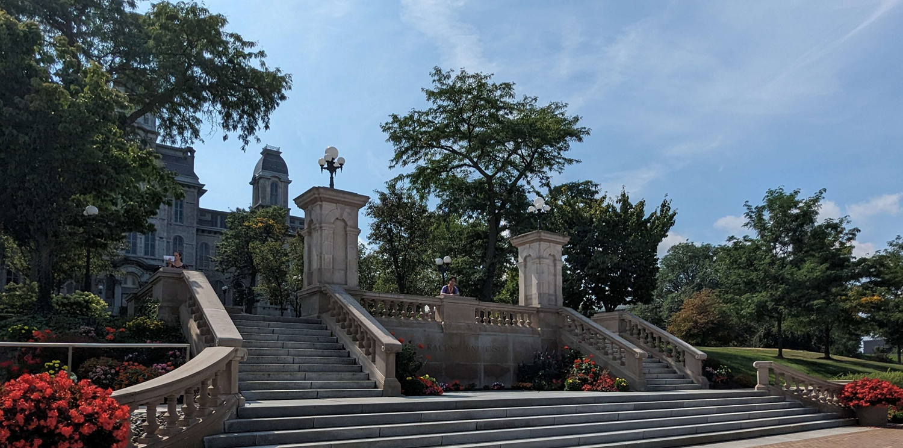

You may recognize me from Syracuse University, or through various online communities I'm apart of! I grew up close to Syracuse my whole life with a keen interest in technology, and at an early age, I became self-taught in a wide variety of computer applications, consisting of but not limited to:
Additionally, I've been working in Game Development teams outside of school, from making music to managing projects, etc. To learn more about me, follow the links at the top of this page ^^
